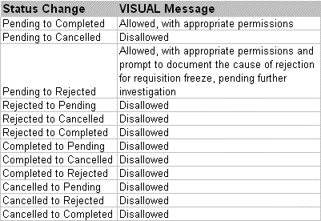

Use Task Maintenance to report ECN task completion. Only the user currently signed into the database can change the status of an ECN task.
VISUAL segregates tasks according to User ID--that is, only the user who is currently signed into the database can report task completion against an ECN.
If the option Generate All Options Simultaneously is active, VISUAL generates all ECN tasks at once and displays them all in the table. Be sure, however, to report task completion in the proper order, according to the ECN hierarchy: Authorization, Implementation, Approval, and then Distribution.
If you try to change the status of a secondary task without first changing the status of the primary task, VISUAL issues an error message.
For example, if User ID DESIGN30 is involved in each phase of ECN completion (Authorization, Implementation, Approval, and Distribution), VISUAL generates four separate tasks.
IF DESIGN30 tries to change the status of an Implementation task to Completed before first changing the status of the Authorization task to Completed, VISUAL issues a warning.
From the main VISUAL window, select Task Maintenance from the Purchasing or Eng/Mfg menu.
or
If you're currently working in the Requisition Entry window, select Task Maintenance from the File menu.
The Task Maintenance window appears
Only tasks assigned to the user currently signed into the database appear. The title bar of the window shows the User ID currently signed into the database.
|
Requisition task assignments also appear in this table. |
The table contains the following fields:
Task Type/#. Seq - The type of task, number of the ECN, and number of the sequence.
If the task is linked to a requisition, the type is REQ.
If the task is linked to an ECN, the type is ECN.
Reference ID - The ECN/Engineering Master this task is attached to.
Status - The current status of the task. Tasks you report as completed prompt VISUAL to update the completion meters in the tasks section of the main ECN Entry window.
Sub Type - The specific task within the ECN: Authorization, Implementation, Approval, Distribution, or Assigned To.
Date Completed - If the task is completed, the date on which the task was reported as completed.
Specifications - Any text regarding the task completion. After the user reports the task as completed, VISUAL generates text for the status change and prefaces it with a date and time stamp.
To modify specification text, double-click the line. The Task Specifications dialog box appears. Click the Insert button to enter or modify text.
Reject Code - If for some reason the task was rejected, VISUAL allows you to specify a reject code and places it in this field.
Rejected Task ID - The ID of the rejected task.
Create Date - The date and time the task was created.
From the Status drop-down list, select the appropriate option:
Cancelled - Select Cancelled if the task is no longer valid.
Completed - Select Completed if the task sequence has been approved and is completed.
Pending - Select Pending, the default, is the task is still pending.
Rejected - Select Rejected to reject the task. Before you can save, VISUAL prompts you to supply a reject code and explanatory text.
|
If the global setting, "Passwords Required for Secure Fields," option is activated, VISUAL prompts you to enter your password before it attempts to change a status. |
The following status changes are not permitted:

Click the Save button to commit the status change.
If VISUAL prompts you for a password, enter it into the Password field and click the Ok button.
Depending on the status change (see above table) VISUAL either changes the status or issues an error message.
Click the Ok button to continue. Refer to the table above for possible status changes.